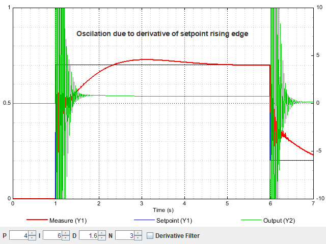
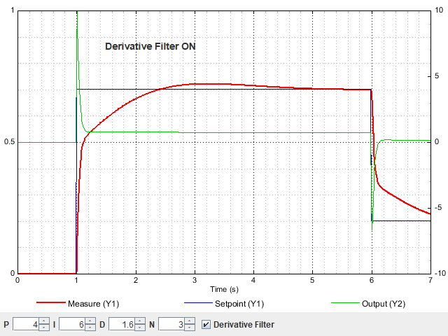

The original, as published: Wikipedia contributors, PID controller. CC BY-SA 4.0, https://creativecommons.org/licenses/by-sa/4.0/. As published, from https://en.wikipedia.org/wiki/PID_controller https://en.wikipedia.org/wiki/PID_controller
A proportional–integral–derivative (PID) controller, or three-term controller, is a feedback-based control loop mechanism commonly used to manage machines and processes that require continuous control and automatic adjustment. It is typically used in industrial control systems and various other applications where constant control through modulation is necessary without human intervention. The PID controller automatically compares the desired target value (setpoint or SP) with the actual value of the system (process variable or PV). The difference between these two values is called the error value, denoted as .
It then applies corrective actions automatically to bring the PV to the same value as the SP using three methods: The proportional (P) component responds to the current error value by producing an output that is directly proportional to the magnitude of the error. This provides immediate correction based on how far the system is from the desired setpoint. The integral (I) component, in turn, considers the cumulative sum of past errors to address any residual steady-state errors that persist over time, eliminating lingering discrepancies. Lastly, the derivative (D) component predicts future error trend by assessing the rate of change of the error, which helps to mitigate overshoot and enhance system stability, particularly when the system undergoes rapid changes. The PID output signal can directly control actuators through voltage, current, or other modulation methods, depending on the application. The PID controller reduces the likelihood of human error and improves automation.
A common example is a vehicle's cruise control system. For instance, when a vehicle encounters a hill, its speed will decrease if the engine power output is kept constant. The PID controller adjusts the engine's power output to restore the vehicle to its desired speed, doing so efficiently with minimal delay and overshoot.
The theoretical foundation of PID controllers dates back to the early 1920s with the development of automatic steering systems for ships. This concept was later adopted for automatic process control in manufacturing, first appearing in pneumatic actuators and evolving into electronic controllers. PID controllers are widely used in numerous applications requiring accurate, stable, and optimized automatic control, such as temperature regulation, motor speed control, and industrial process management.
The most distinguishing feature of the PID controller is the ability to use the three control terms of proportional, integral and derivative influence on the controller output to apply accurate and optimal control. The block diagram on the right shows the principles of how these terms are generated and applied. It shows a PID controller, which continuously calculates an error value as the difference between a desired setpoint and a measured process variable : , and applies a correction based on proportional, integral, and derivative terms. The controller attempts to minimize the error over time by adjustment of a control variable , such as the opening of a control valve, to a new value determined by a weighted sum of the control terms. The PID controller directly generates a continuous control signal based on error, without discrete modulation.
In this model:
Tuning – The balance of these effects is achieved by loop tuning to produce the optimal control function. The tuning constants are shown below as "K" and must be derived for each control application, as they depend on the response characteristics of the physical system, external to the controller. These are dependent on the behavior of the measuring sensor, the final control element (such as a control valve), any control signal delays, and the process itself. Approximate values of constants can usually be initially entered knowing the type of application, but they are normally refined, or tuned, by introducing a setpoint change and observing the system response.
Control action – The mathematical model and practical loop above both use a direct control action for all the terms, which means an increasing positive error results in an increasing positive control output correction. This is because the "error" term is not the deviation from the setpoint (actual–desired) but is in fact the correction needed (desired–actual). The system is called reverse acting if it is necessary to apply negative corrective action. For instance, if the valve in the flow loop was 100–0% valve opening for 0–100% control output, meaning that the controller action has to be reversed. Some process control schemes and final control elements require this reverse action. An example would be a valve for cooling water, where the fail-safe mode, in the case of signal loss, would be 100% opening of the valve; therefore, 0% controller output needs to cause 100% valve opening.
The overall control function is
where , , and , all non-negative, denote the coefficients for the proportional, integral, and derivative terms respectively (sometimes denoted P, I, and D).
In the standard form of the equation (see later in article), and are respectively replaced by and ; the advantage of this being that and have some understandable physical meaning, as they represent an integration time and a derivative time respectively. is the time constant with which the controller will attempt to approach the set point. determines how long the controller will tolerate the output being consistently above or below the set point.
where
Although a PID controller has three control terms, some applications need only one or two terms to provide appropriate control. This is achieved by setting the unused parameters to zero and is called a PI, PD, P, or I controller in the absence of the other control actions. PI controllers are fairly common in applications where derivative action would be sensitive to measurement noise, but the integral term is often needed for the system to reach its target value.
The use of the PID algorithm does not guarantee optimal control of the system or its control stability . Situations may occur where there are excessive delays: the measurement of the process value is delayed, or the control action does not apply quickly enough. In these cases, lead–lag compensation is required to be effective. The response of the controller can be described in terms of its responsiveness to an error, the degree to which the system overshoots a setpoint, and the degree of any system oscillation. But the PID controller is broadly applicable since it relies only on the response of the measured process variable, not on knowledge or a model of the underlying process.
The centrifugal governor was invented by Christiaan Huygens in the 17th century to regulate the gap between millstones in windmills depending on the speed of rotation, and thereby compensate for the variable speed of grain feed.
With the invention of the low-pressure stationary steam engine, there was a need for automatic speed control, and James Watt's "conical pendulum" governor, a set of revolving steel balls attached to a vertical spindle by link arms, came to be an industry standard. This was based on the millstone-gap control concept.
Rotating-governor speed control, however, was still variable under conditions of varying load, where the shortcoming of what is now known as proportional control alone was evident. The error between the desired speed and the actual speed would increase with increasing load. In the 19th century, the theoretical basis for the operation of governors was first described by James Clerk Maxwell in 1868 in his now-famous paper On Governors. He explored the mathematical basis for control stability and progressed a good way towards a solution, but made an appeal for mathematicians to examine the problem. The problem was examined further in 1874 by Edward Routh, Charles Sturm, and in 1895, Adolf Hurwitz, all of whom contributed to the establishment of control stability criteria. In subsequent applications, speed governors were further refined, notably by American scientist Willard Gibbs, who in 1872 theoretically analyzed Watt's conical pendulum governor.
About this time, the invention of the Whitehead torpedo posed a control problem that required accurate control of the running depth. Use of a depth pressure sensor alone proved inadequate, and a pendulum that measured the fore and aft pitch of the torpedo was combined with depth measurement to become the pendulum-and-hydrostat control. Pressure control provided only a proportional control that, if the control gain was too high, would become unstable and go into overshoot with considerable instability of depth-holding. The pendulum added what is now known as derivative control, which damped the oscillations by detecting the torpedo dive/climb angle and thereby the rate-of-change of depth. This development (named by Whitehead as "The Secret" to give no clue to its action) was around 1868.
Another early example of a PID-type controller was developed by Elmer Sperry in 1911 for ship steering, though his work was intuitive rather than mathematically based.
It was not until 1922, however, that a formal control law for what we now call PID or three-term control was first developed using theoretical analysis, by Russian American engineer Nicolas Minorsky. Minorsky was researching and designing automatic ship steering for the US Navy and based his analysis on observations of a helmsman. He noted the helmsman steered the ship based not only on the current course error but also on past error, as well as the current rate of change; this was then given a mathematical treatment by Minorsky. His goal was stability, not general control, which simplified the problem significantly. While proportional control provided stability against small disturbances, it was insufficient for dealing with a steady disturbance, notably a stiff gale (due to steady-state error), which required adding the integral term. Finally, the derivative term was added to improve stability and control.
Trials were carried out on the USS New Mexico, with the controllers controlling the angular velocity (not the angle) of the rudder. PI control yielded sustained yaw (angular error) of ±2°. Adding the D element yielded a yaw error of ±1/6°, better than most helmsmen could achieve.
The Navy ultimately did not adopt the system due to resistance by personnel. Similar work was carried out and published by several others in the 1930s.
The wide use of feedback controllers did not become feasible until the development of wideband high-gain amplifiers to use the concept of negative feedback. This had been developed in telephone engineering electronics by Harold Black in the late 1920s, but not published until 1934. Independently, Clesson E Mason of the Foxboro Company in 1930 invented a wide-band pneumatic controller by combining the nozzle and flapper high-gain pneumatic amplifier, which had been invented in 1914, with negative feedback from the controller output. This dramatically increased the linear range of operation of the nozzle and flapper amplifier, and integral control could also be added by the use of a precision bleed valve and a bellows generating the integral term. The result was the "Stabilog" controller, which gave both proportional and integral functions using feedback bellows. The integral term was called Reset. Later, the derivative term was added by a further bellows and adjustable orifice.
From about 1932 onwards, the use of wideband pneumatic controllers increased rapidly in a variety of control applications. Air pressure was used for generating the controller output, and also for powering process modulating devices such as diaphragm-operated control valves. They were simple, low-maintenance devices that operated well in harsh industrial environments and did not present explosion risks in hazardous locations. They were the industry standard for many decades until the advent of discrete electronic controllers and distributed control systems (DCSs).
With these controllers, a pneumatic industry signaling standard of 3–15 psi (0.2–1.0 bar) was established, which had an elevated zero to ensure devices were working within their linear characteristic and represented the control range of 0-100%.
In the 1950s, when high-gain electronic amplifiers became cheap and reliable, electronic PID controllers became popular, and the pneumatic standard was emulated by 10-50 mA and 4–20 mA current loop signals (the latter became the industry standard). Pneumatic field actuators are still widely used because of the advantages of pneumatic energy for control valves in process plant environments.
Most modern PID controls in industry are implemented as computer software in DCSs, programmable logic controllers (PLCs), or discrete compact controllers.
Electronic analog PID control loops were often found within more complex electronic systems, for example, the head positioning of a disk drive, the power conditioning of a power supply, or even the movement-detection circuit of a modern seismometer. Discrete electronic analog controllers have been largely replaced by digital controllers using microcontrollers or FPGAs to implement PID algorithms. However, discrete analog PID controllers are still used in niche applications requiring high-bandwidth and low-noise performance, such as laser-diode controllers.
Consider a robotic arm that can be moved and positioned by a control loop. An electric motor may lift or lower the arm, depending on forward or reverse power applied, but power cannot be a simple function of position because of the inertial mass of the arm, forces due to gravity, external forces on the arm such as a load to lift or work to be done on an external object.
The PID controller continuously adjusts the input current to achieve smooth motion.
By measuring the position (PV) and subtracting it from the setpoint (SP), the error (e) is found, and from it, the controller calculates how much electric current (MV) to supply to the motor. Again the "error" is not the deviation from the SP but the required correction.
The obvious method is proportional control: the motor current is set in proportion to the existing error. However, this method fails if, for instance, the arm has to lift different weights: a greater weight needs a greater force applied for the same error on the down side, but a smaller force if the error is low on the upside. That's where the integral and derivative terms play their part.
An integral term increases action in relation not only to the error but also the time for which it has persisted. So, if the applied force is not enough to bring the error to zero, this force will be increased as time passes. A pure "I" controller could bring the error to zero, but it would be both weakly reacting at the start (because the action would be small at the beginning, depending on time to become significant) and more aggressive at the end (the action increases as long as the error is positive, even if the error is near zero).
Applying too much integral when the error is small and decreasing will lead to overshoot. After overshooting, if the controller were to apply a large correction in the opposite direction and repeatedly overshoot the desired position, the output would oscillate around the setpoint in either a constant, growing, or decaying sinusoid. If the amplitude of the oscillations increases with time, the system is unstable. If it decreases, the system is stable. If the oscillations remain at a constant magnitude, the system is marginally stable.
A derivative term does not consider the magnitude of the error (meaning it cannot bring it to zero: a pure D controller cannot bring the system to its setpoint), but rather the rate of change of error, trying to bring this rate to zero. It aims at flattening the error trajectory into a horizontal line, damping the force applied, and so reduces overshoot (error on the other side because of too great applied force).
In the interest of achieving a controlled arrival at the desired position (SP) in a timely and accurate way, the controlled system needs to be critically damped. A well-tuned position control system will also apply the necessary currents to the controlled motor so that the arm pushes and pulls as necessary to resist external forces trying to move it away from the required position. The setpoint itself may be generated by an external system, such as a PLC or other computer system, so that it continuously varies depending on the work that the robotic arm is expected to do. A well-tuned PID control system will enable the arm to meet these changing requirements to the best of its capabilities.
If a controller starts from a stable state with zero error (PV = SP), then further changes by the controller will be in response to changes in other measured or unmeasured inputs to the process that affect the process, and hence the PV. Variables that affect the process other than the MV are known as disturbances. Generally, controllers are used to reject disturbances and to implement setpoint changes. A change in load on the arm constitutes a disturbance to the robot arm control process.
In theory, a controller can be used to control any process that has a measurable output (PV), a known ideal value for that output (SP), and an input to the process (MV) that will affect the relevant PV. Controllers are used in industry to regulate temperature, pressure, force, feed rate, flow rate, chemical composition (component concentrations), weight, position, speed, and practically every other variable for which a measurement exists.
The PID control scheme is named after its three correcting terms, whose sum constitutes the manipulated variable (MV). The proportional, integral, and derivative terms are summed to calculate the output of the PID controller. Defining as the controller output, the final form of the PID algorithm is
where
Equivalently, the transfer function in the Laplace domain of the PID controller is
where is the complex angular frequency.
The proportional term produces an output value that is proportional to the current error value. The proportional response can be adjusted by multiplying the error by a constant Kp, called the proportional gain constant.
The proportional term is given by
A high proportional gain results in a large change in the output for a given change in the error. If the proportional gain is too high, the system can become unstable (see the section on loop tuning). In contrast, a small gain results in a small output response to a large input error, and a less responsive or less sensitive controller. If the proportional gain is too low, the control action may be too small when responding to system disturbances. Tuning theory and industrial practice indicate that the proportional term should contribute the bulk of the output change.
The steady-state error is the difference between the desired final output and the actual one. Because a non-zero error is required to drive it, a proportional controller generally operates with a steady-state error. Steady-state error (SSE) is proportional to the process gain and inversely proportional to proportional gain. SSE may be mitigated by adding a compensating bias term to the setpoint AND output or corrected dynamically by adding an integral term.
The contribution from the integral term is proportional to both the magnitude of the error and the duration of the error. The integral in a PID controller is the sum of the instantaneous error over time and gives the accumulated offset that should have been corrected previously. The accumulated error is then multiplied by the integral gain (Ki) and added to the controller output.
The integral term is given by
The integral term accelerates the movement of the process towards setpoint and eliminates the residual steady-state error that occurs with a pure proportional controller. However, since the integral term responds to accumulated errors from the past, it can cause the present value to overshoot the setpoint value (see the section on loop tuning).
The derivative of the process error is calculated by determining the slope of the error over time and multiplying this rate of change by the derivative gain Kd. The magnitude of the contribution of the derivative term to the overall control action is termed the derivative gain, Kd.
The derivative term is given by
Derivative action predicts system behavior and thus improves settling time and stability of the system. Derivative action is seldom used in practice, though – by one estimate in only 25% of deployed controllers – because of its variable impact on system stability in real-world applications.
Tuning a control loop is the adjustment of its control parameters (proportional band/gain, integral gain/reset, derivative gain/rate) to the optimum values for the desired control response. Stability (no unbounded oscillation) is a basic requirement, but beyond that, different systems have different behavior, different applications have different requirements, and requirements may conflict with one another.
Even though there are only three parameters and it is simple to describe in principle, PID tuning is a difficult problem because it must satisfy complex criteria within the limitations of PID control. Accordingly, there are various methods for loop tuning, and more sophisticated techniques are the subject of patents; this section describes some traditional, manual methods for loop tuning.
Designing and tuning a PID controller appears to be conceptually intuitive, but can be hard in practice if multiple (and often conflicting) objectives, such as short transient and high stability, are to be achieved. PID controllers often provide acceptable control using default tunings, but performance can generally be improved by careful tuning, and performance may be unacceptable with poor tuning. Usually, initial designs need to be adjusted repeatedly through computer simulations until the closed-loop system performs or compromises as desired.
Some processes have a degree of nonlinearity, so parameters that work well at full-load conditions do not work when the process is starting up from no load. This can be corrected by gain scheduling (using different parameters in different operating regions).
If the PID controller parameters (the gains of the proportional, integral and derivative terms) are chosen incorrectly, the controlled process input can be unstable; i.e., its output diverges, with or without oscillation, and is limited only by saturation or mechanical breakage. Instability is caused by excess gain, particularly in the presence of significant lag.
Generally, stabilization of response is required, and the process must not oscillate for any combination of process conditions and setpoints, though sometimes marginal stability (bounded oscillation) is acceptable or desired.
Mathematically, the origins of instability can be seen in the Laplace domain.
The closed-loop transfer function is
where is the PID transfer function, and is the plant transfer function. A system is unstable where the closed-loop transfer function diverges for some . This happens in situations where . In other words, this happens when with a 180° phase shift. Stability is guaranteed when for frequencies that suffer high phase shifts. A more general formalism of this effect is known as the Nyquist stability criterion.
The optimal behavior on a process change or setpoint change varies depending on the application.
Two basic requirements are regulation (disturbance rejection – staying at a given setpoint) and command tracking (implementing setpoint changes). These terms refer to how well the controlled variable tracks the desired value. Specific criteria for command tracking include rise time and settling time. Some processes must not allow an overshoot of the process variable beyond the setpoint if, for example, this would be unsafe. Other processes must minimize the energy expended in reaching a new setpoint.
There are several methods for tuning a PID loop. The most effective methods generally involve developing some form of process model and then choosing P, I, and D based on the dynamic model parameters. Manual tuning methods can be relatively time-consuming, particularly for systems with long loop times.
The choice of method depends largely on whether the loop can be taken offline for tuning, and on the response time of the system. If the system can be taken offline, the best tuning method often involves subjecting the system to a step change in input, measuring the output as a function of time, and using this response to determine the control parameters.
| Method | Advantages | Disadvantages |
|---|---|---|
| Manual tuning | No mathematics required; online. | This is an iterative, experience-based, trial-and-error procedure that can be relatively time consuming. Operators may find "bad" parameters without proper training. |
| Ziegler–Nichols | Online tuning, with no tuning parameter therefore easy to deploy. | Process upsets may occur in the tuning, can yield very aggressive parameters. Does not work well with time-delay processes. |
| Tyreus Luyben | Online tuning, an extension of the Ziegler–Nichols method, that is generally less aggressive. | Process upsets may occur in the tuning; operator needs to select a parameter for the method, which requires insight. |
| Software tools | Consistent tuning; online or offline – can employ computer-automated control system design (CAutoD) techniques; may include valve and sensor analysis; allows simulation before downloading; can support non-steady-state (NSS) tuning. | "Black box tuning" that requires specification of an objective describing the optimal behaviour. |
| Cohen–Coon | Good process models. | Offline; only good for first-order processes. |
| Åström-Hägglund | Unlike the Ziegler–Nichols method, this will not introduce a risk of loop instability. Little prior process knowledge required. | May give excessive derivative action and sluggish response. Later extensions resolve these issues, but require a more complex tuning procedure. |
| Simple control rule (SIMC) | Analytically derived, works on time-delayed processes, has an additional tuning parameter that allows additional flexibility. Tuning can be performed with step-response model. | Offline method; cannot be applied to oscillatory processes. Operator must choose the additional tuning parameter. |
If the system must remain online, one tuning method is to first set and values to zero. Increase the until the output of the loop oscillates; then set to approximately half that value for a "quarter amplitude decay"-type response. Then increase until any offset is corrected in sufficient time for the process, but not until too great a value causes instability. Finally, increase , if required, until the loop is acceptably quick to reach its reference after a load disturbance. Too much causes excessive response and overshoot. A fast PID loop tuning usually overshoots slightly to reach the setpoint more quickly; however, some systems cannot accept overshoot, in which case an overdamped closed-loop system is required, which in turn requires a setting significantly less than half that of the setting that was causing oscillation.
| Parameter | Rise time | Overshoot | Settling time | Steady-state error | Stability |
|---|---|---|---|---|---|
| Decrease | Increase | Small change | Decrease | Degrade | |
| Decrease | Increase | Increase | Eliminate | Degrade | |
| Minor change | Decrease | Decrease | No effect in theory | Improve if small |
Another heuristic tuning method is known as the Ziegler–Nichols method, introduced by John G. Ziegler and Nathaniel B. Nichols in the 1940s. As in the method above, the and gains are first set to zero. The proportional gain is increased until it reaches the ultimate gain at which the output of the loop starts to oscillate constantly. and the oscillation period are used to set the gains as follows:
| Control type | |||
|---|---|---|---|
| P | — | — | |
| PI | — | ||
| PID |
The oscillation frequency is often measured instead, and the reciprocals of each multiplication yield the same result.
These gains apply to the ideal, parallel form of the PID controller. When applied to the standard PID form, only the integral and derivative gains and are dependent on the oscillation period .
This method was developed in 1953 and is based on a first-order + time delay model. Similar to the Ziegler–Nichols method, a set of tuning parameters were developed to yield a closed-loop response with a decay ratio of . Arguably, the biggest problem with these parameters is that a small change in the process parameters could potentially cause a closed-loop system to become unstable.
Published in 1984 by Karl Johan Åström and Tore Hägglund, the relay method temporarily operates the process using bang-bang control and measures the resultant oscillations. The output is switched (as if by a relay, hence the name) between two values of the control variable. The values must be chosen so the process will cross the setpoint, but they need not be 0% and 100%; by choosing suitable values, dangerous oscillations can be avoided.
As long as the process variable is below the setpoint, the control output is set to the higher value. As soon as it rises above the setpoint, the control output is set to the lower value. Ideally, the output waveform is nearly square, spending equal time above and below the setpoint. The period and amplitude of the resultant oscillations are measured and used to compute the ultimate gain and period, which are then fed into the Ziegler–Nichols method.
Specifically, the ultimate period is assumed to be equal to the observed period, and the ultimate gain is computed as where a is the amplitude of the process variable oscillation, and b is the amplitude of the control output change which caused it.
There are numerous variants on the relay method.
The transfer function for a first-order process with dead time is
where kp is the process gain, τp is the time constant, θ is the dead time, and u(s) is a step change input. Converting this transfer function to the time domain results in
using the same parameters found above.
It is important when using this method to apply a large enough step-change input that the output can be measured; however, too large of a step change can affect the process stability. Additionally, a larger step change ensures that the output does not change due to a disturbance (for best results, try to minimize disturbances when performing the step test).
One way to determine the parameters for the first-order process is to use the 63.2% method. In this method, the process gain (kp) is equal to the change in output divided by the change in input. The dead time θ is the amount of time between when the step change occurred and when the output first changed. The time constant (τp) is the amount of time it takes for the output to reach 63.2% of the new steady-state value after the step change. One downside to using this method is that it can take a while to reach a new steady-state value if the process has large time constants.
Most modern industrial facilities no longer tune loops using the manual calculation methods shown above. Instead, PID tuning and loop optimization software are used to ensure consistent results. These software packages gather data, develop process models, and suggest optimal tuning. Some software packages can even develop tuning by gathering data from reference changes.
Mathematical PID loop tuning induces an impulse in the system and then uses the controlled system's frequency response to design the PID loop values. In loops with response times of several minutes, mathematical loop tuning is recommended because trial and error can take days just to find a stable set of loop values. Optimal values are harder to find. Some digital loop controllers offer a self-tuning feature in which very small setpoint changes are sent to the process, allowing the controller itself to calculate optimal tuning values.
Another approach calculates initial values via the Ziegler–Nichols method, and uses a numerical optimization technique to find better PID coefficients.
Other formulas are available to tune the loop according to different performance criteria. Many patented formulas are now embedded within PID tuning software and hardware modules.
Advances in automated PID loop tuning software also deliver algorithms for tuning PID Loops in a dynamic or non-steady state (NSS) scenario. The software models the dynamics of a process through a disturbance and calculates PID control parameters in response.
While PID controllers are applicable to many control problems and often perform satisfactorily without any improvements or only coarse tuning, they can perform poorly in some applications and do not, in general, provide optimal control. The fundamental difficulty with PID control is that it is a feedback control system with constant parameters and no direct knowledge of the process, and thus, overall performance is reactive and a compromise. While PID control is the best controller for an observer that has no model of the process, better performance can be obtained by overtly modeling the actor of the process without resorting to an observer.
PID controllers, when used alone, can give poor performance when the PID loop gains must be reduced so that the control system does not overshoot, oscillate or hunt about the control setpoint value. They also have difficulties in the presence of non-linearities, may trade off regulation versus response time, do not react to changing process behavior (say, the process changes after it has warmed up), and have lag in responding to large disturbances.
The most significant improvement is to incorporate feed-forward control with knowledge about the system, and using the PID only to control error. Alternatively, PIDs can be modified in more minor ways, such as by changing the parameters (either gain scheduling in different use cases or adaptively modifying them based on performance), improving measurement (higher sampling rate, precision, and accuracy, and low-pass filtering if necessary), or cascading multiple PID controllers.
PID controllers work best when the loop to be controlled is linear and symmetric. Thus, their performance in non-linear and asymmetric systems is degraded.
A nonlinear valve in a flow control application, for instance, will result in variable loop sensitivity that requires damping to prevent instability. One solution is to include a model of the valve's nonlinearity in the control algorithm to compensate for this.
An asymmetric application, for example, is temperature control in HVAC systems that use only active heating (via a heating element), whereas only passive cooling is available. Overshoot of rising temperature can only be corrected slowly; active cooling is not available to force temperature downward as a function of the control output. In this case, the PID controller could be tuned to be over-damped, to prevent or reduce overshoot, but this reduces performance by increasing the settling time of a rising temperature to the set point. The inherent degradation of control quality in this application could be solved by application of active cooling.
A problem with the derivative term is that it amplifies higher-frequency measurement or process noise that can cause large amounts of change in the output. It is often helpful to filter the measurements with a low-pass filter in order to remove higher-frequency noise components. As low-pass filtering and derivative control can cancel each other out, the amount of filtering is limited. Therefore, low-noise instrumentation can be important. A nonlinear median filter may be used, which improves the filtering efficiency and practical performance. In some cases, the differential band can be turned off with little loss of control. This is equivalent to using the PID controller as a PI controller.
The basic PID algorithm presents some challenges in control applications that have been addressed by minor modifications to the PID form.
One common problem resulting from the ideal PID implementations is integral windup. Following a large change in setpoint, the integral term can accumulate an error larger than the maximal value for the regulation variable (windup); thus, the system overshoots and continues to increase until this accumulated error is unwound. This problem can be addressed by:
For example, a PID loop is used to control the temperature of an electric resistance furnace where the system has stabilized. Now, when the door is opened and something cold is put into the furnace, the temperature drops below the setpoint. The integral function of the controller tends to compensate for error by introducing another error in the positive direction. This overshoot can be avoided by freezing of the integral function after the opening of the door for the time the control loop typically needs to reheat the furnace.
A PI controller (proportional–integral controller) is a special case of the PID controller in which the derivative (D) of the error is not used.
The controller output is given by
where is the error or deviation of actual measured value (PV) from the setpoint (SP).
A PI controller can be modelled easily in software such as Simulink or Xcos using a "flow chart" box involving Laplace operators:
where
Setting a value for is often a trade off between decreasing overshoot and increasing settling time.
The lack of derivative action may make the system more steady in the steady state in the case of noisy data. This is because derivative action is more sensitive to higher-frequency terms in the inputs.
Without derivative action, a PI-controlled system is less responsive to real (non-noise) and relatively fast alterations in state, and so the system will be slower to reach setpoint and slower to respond to perturbations than a well-tuned PID system may be.
Many PID loops control a mechanical device (for example, a valve). Mechanical maintenance can be a major cost, and wear leads to control degradation in the form of either stiction or backlash in the mechanical response to an input signal. The rate of mechanical wear is mainly a function of how often a device is activated to make a change. Where wear is a significant concern, the PID loop may have an output deadband to reduce the frequency of activation of the output (valve). This is accomplished by modifying the controller to hold its output steady if the change would be small (within the defined deadband range). The calculated output must leave the deadband before the actual output will change.
The proportional and derivative terms can produce excessive movement in the output when a system is subjected to an instantaneous step increase in the error, such as a large setpoint change. In the case of the derivative term, this is due to taking the derivative of the error, which is very large in the case of an instantaneous step change. As a result, some PID algorithms incorporate some of the following modifications:
The control system performance can be improved by combining the feedback (or closed-loop) control of a PID controller with feed-forward (or open-loop) control. Knowledge about the system (such as the desired acceleration and inertia) can be fed forward and combined with the PID output to improve the overall system performance. The feed-forward value alone can often provide the major portion of the controller output. The PID controller primarily has to compensate for whatever difference or error remains between the setpoint (SP) and the system response to the open-loop control. Since the feed-forward output is not affected by the process feedback, it can never cause the control system to oscillate, thus improving the system response without affecting stability. Feed forward can be based on the setpoint and on extra measured disturbances. Setpoint weighting is a simple form of feed forward.
For example, in most motion control systems, in order to accelerate a mechanical load under control, more force is required from the actuator. If a velocity loop PID controller is being used to control the speed of the load and command the force being applied by the actuator, then it is beneficial to take the desired instantaneous acceleration, scale that value appropriately and add it to the output of the PID velocity loop controller. This means that whenever the load is being accelerated or decelerated, a proportional amount of force is commanded from the actuator regardless of the feedback value. The PID loop in this situation uses the feedback information to change the combined output to reduce the remaining difference between the process setpoint and the feedback value. Working together, the combined open-loop feed-forward controller and closed-loop PID controller can provide a more responsive control system.
PID controllers are often implemented with a "bumpless" initialization feature that recalculates the integral accumulator term to maintain a consistent process output through parameter changes. A partial implementation is to store the integral gain times the error rather than storing the error and postmultiplying by the integral gain, which prevents discontinuous output when the I gain is changed, but not the P or D gains.
In addition to feed-forward, PID controllers are often enhanced through methods such as PID gain scheduling (changing parameters in different operating conditions), fuzzy logic, or computational verb logic. Further practical application issues can arise from instrumentation connected to the controller. A high enough sampling rate, measurement precision, and measurement accuracy are required to achieve adequate control performance. Another new method for improving PID controllers is to increase the degree of freedom by using fractional order. The order of the integrator and differentiator add increased flexibility to the controller.
One distinctive advantage of PID controllers is that two PID controllers can be used together to yield better dynamic performance. This is called cascaded PID control. Two controllers are in cascade when they are arranged so that one regulates the set point of the other. A PID controller acts as an outer-loop controller that controls a primary physical parameter, such as fluid level or velocity. The other controller acts as an inner-loop controller, which reads the output of the outer-loop controller as the setpoint, usually controlling a more rapidly changing parameter, such as flow rate or acceleration. It can be mathematically proven that the working frequency of the controller is increased and the time constant of the object is reduced by using cascaded PID controllers..
For example, a temperature-controlled circulating bath has two PID controllers in cascade, each with its own thermocouple temperature sensor. The outer controller controls the temperature of the water using a thermocouple located far from the heater, where it accurately reads the temperature of the bulk of the water. The error term of this PID controller is the difference between the desired bath temperature and measured temperature. Instead of controlling the heater directly, the outer PID controller sets a heater temperature goal for the inner PID controller. The inner PID controller controls the temperature of the heater using a thermocouple attached to the heater. The inner controller's error term is the difference between this heater temperature setpoint and the measured temperature of the heater. Its output controls the actual heater to stay near this setpoint.
The proportional, integral, and differential terms of the two controllers will be very different. The outer PID controller has a long time constant – all the water in the tank needs to heat up or cool down. The inner loop responds much more quickly. Each controller can be tuned to match the physics of the system it controls – heat transfer and thermal mass of the whole tank or of just the heater – giving better total response.
The form of the PID controller most often encountered in industry, and the one most relevant to tuning algorithms, is the standard form. In this form the gain is applied to the , and terms, yielding:
where
In this standard form, the parameters have a clear physical meaning. In particular, the inner summation produces a new single error value, which is compensated for future and past errors. The proportional error term is the current error. The derivative term attempts to predict the error value at seconds (or samples) in the future, assuming that the loop control remains unchanged. The integral component adjusts the error value to compensate for the sum of all past errors, with the intention of completely eliminating them in seconds (or samples). The resulting compensated single error value is then scaled by the single gain to compute the control variable.
In the parallel form, shown in the controller theory section
the gain parameters are related to the parameters of the standard form through and . This parallel form, where the parameters are treated as simple gains, is the most general and flexible form. However, it is also the form where the parameters have the weakest relationship to physical behaviors and is generally reserved for theoretical treatment of the PID controller. The standard form, despite being slightly more complex mathematically, is more common in industry.
In many cases, the manipulated variable output by the PID controller is a dimensionless fraction between 0 and 100% of some maximum possible value, and the translation into real units (such as pumping rate or watts of heater power) is outside the PID controller. The process variable, however, is in dimensioned units such as temperature. It is common in this case to express the gain not as "output per degree", but rather in the reciprocal form of a proportional band , which is "degrees per full output": the range over which the output changes from 0 to 1 (0% to 100%). Beyond this range, the output is saturated, full-off or full-on. The narrower this band, the higher the proportional gain.
In most commercial control systems, derivative action is based on the process variable rather than the error. That is, a change in the setpoint does not affect the derivative action. This is because the digitized version of the algorithm produces a large unwanted spike when the setpoint is changed. If the setpoint is constant, then changes in the PV will be the same as changes in error. Therefore, this modification makes no difference to the way the controller responds to process disturbances.
Most commercial control systems offer the option of also basing the proportional action solely on the process variable. This means that only the integral action responds to changes in the setpoint. The modification to the algorithm does not affect the way the controller responds to process disturbances. Basing proportional action on PV eliminates the instant and possibly very large change in output caused by a sudden change to the setpoint. Depending on the process and tuning, this may be beneficial to the response to a setpoint step.
King describes an effective chart-based method.
Sometimes it is useful to write the PID regulator in Laplace transform form:
Having the PID controller written in Laplace form and having the transfer function of the controlled system makes it easy to determine the closed-loop transfer function of the system.
Another representation of the PID controller is the series, or interacting form
where the parameters are related to the parameters of the standard form through
with
This form essentially consists of a PD and PI controller in series. As the integral is required to calculate the controller's bias, this form provides the ability to track an external bias value, which is required to be used for proper implementation of multi-controller advanced control schemes.
The analysis for designing a digital implementation of a PID controller in a microcontroller (MCU) or FPGA device requires the standard form of the PID controller to be discretized. Approximations for first-order derivatives are made by backward finite differences. and are discretized with a sampling period , k is the sample index.
Differentiating both sides of PID equation using Newton's notation gives:
Derivative terms are approximated as,
So,
Applying backward difference again gives,
By simplifying and regrouping terms of the above equation, an algorithm for an implementation of the discretized PID controller in an MCU is finally obtained:
or:
s.t.
Note: This method solves in fact where is a constant independent of t. This constant is useful when you want to have a start and stop control on the regulation loop. For instance, setting Kp,Ki and Kd to 0 will keep u(t) constant. Likewise, when you want to start a regulation on a system where the error is already close to 0 with non null, it prevents sending the output to 0.
Below is simple pseudocode for a PID controller:
Kp – proportional gainKi – integral gainKd – derivative gaindt – loop interval time (assumes reasonable scale)previous_error := 0 integral := 0 loop: error := setpoint − measured_value proportional := error; integral := integral + error × dt derivative := (error - previous_error) / dt output := Kp × proportional + Ki × integral + Kd × derivative previous_error := error wait(dt) goto loop
The pseudocode below illustrates how to implement a PID considering the PID as an IIR filter:
The Z-transform of a PID can be written as ( is the sampling time):
and expressed in an IIR form (in agreement with the discrete implementation shown above):
We can then deduce the recursive iteration often found in FPGA implementation
A0 := Kp + Ki*dt + Kd/dt
A1 := -Kp - 2*Kd/dt
A2 := Kd/dt
error[2] := 0 // e(t-2)
error[1] := 0 // e(t-1)
error[0] := 0 // e(t)
output := u0 // Usually the current value of the actuator
loop:
error[2] := error[1]
error[1] := error[0]
error[0] := setpoint − measured_value
output := output + A0 * error[0] + A1 * error[1] + A2 * error[2]
wait(dt)
goto loopHere, Kp is a dimensionless number, Ki is expressed in s−1 and Kd is expressed in s. When doing a regulation where the actuator and the measured value are not in the same unit (e.g., temperature regulation using a motor controlling a valve), , and may be corrected by a unit conversion factor. It may also be interesting to use Ki in its reciprocal form (integration time). The above implementation allows for an I-only controller, which may be useful in some cases.
In the real world, this is D-to-A converted and passed into the process under control as the manipulated variable (MV). The current error is stored elsewhere for re-use in the next differentiation; the program then waits until dt seconds have passed since start, and the loop begins again, reading in new values for the PV and the setpoint and calculating a new value for the error.
Note that for real code, the use of wait(dt) might be inappropriate because it does not account for time taken by the algorithm itself during the loop, or more importantly, any pre-emption delaying the algorithm.
A common issue when using is the response to the derivative of a rising or falling edge of the setpoint, as shown below: 
A typical workaround is to filter the derivative action using a low-pass filter of time constant where : 
A variant of the above algorithm using an infinite impulse response (IIR) filter for the derivative:
A0 := Kp + Ki*dt
A1 := -Kp
error[2] := 0 // e(t-2)
error[1] := 0 // e(t-1)
error[0] := 0 // e(t)
output := u0 // Usually the current value of the actuator
A0d := Kd/dt
A1d := - 2.0*Kd/dt
A2d := Kd/dt
N := 5
tau := Kd / (Kp*N) // IIR filter time constant
alpha := dt / (2*tau)
d0 := 0
d1 := 0
fd0 := 0
fd1 := 0
loop:
error[2] := error[1]
error[1] := error[0]
error[0] := setpoint − measured_value
// PI
output := output + A0 * error[0] + A1 * error[1]
// Filtered D
d1 := d0
d0 := A0d * error[0] + A1d * error[1] + A2d * error[2]
fd1 := fd0
fd0 := ((alpha) / (alpha + 1)) * (d0 + d1) - ((alpha - 1) / (alpha + 1)) * fd1
output := output + fd0
wait(dt)
goto loop